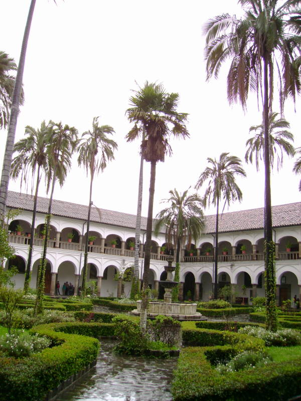
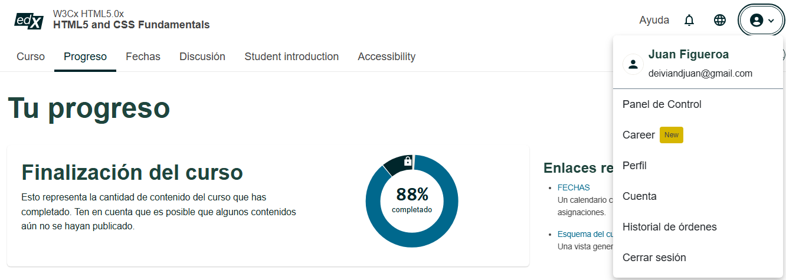

Acerca del Complejo Histórico
Conocido popularmente como "El Escorial de los Andes", el conjunto arquitectónico de San Francisco es la estructura monumental más grande construida en América durante la época colonial. Su edificación comenzó en 1537, apenas tres años después de la fundación española de la ciudad, bajo el mando del franciscano Fray Jodoco Ricke.
Este lugar no solo fue un centro de fe, sino también de educación y agricultura. Fue en los atrios de este complejo donde Fray Jodoco Ricke sembró por primera vez el trigo en Sudamérica, utilizando semillas traídas en un cántaro de barro.
Para profundizar en los detalles arquitectónicos, puedes leer el artículo completo en Wikipedia sobre la Iglesia de San Francisco.
Tesoros de la Escuela Quiteña
El museo alberga aproximadamente 3,500 obras de arte colonial que representan la máxima expresión del sincretismo indígena y español:
- Escultura: Obras magistrales de Caspicara y la famosa "Virgen Alada de Quito" de Bernardo de Legarda.
- Pintura: Lienzos invaluables de Miguel de Santiago que adornan los pasillos del convento.
- Mobiliario: El impresionante coro tallado en madera de cedro del siglo XVII, de estilo mudéjar.
- Cervecería: Instalaciones conservadas de la primera cervecería franciscana de Sudamérica (1566).
Horarios y Tarifas de Ingreso
| Día | Horario de Atención | Costo Nacionales | Costo Extranjeros |
|---|---|---|---|
| Lunes a Sábado | 09:00 - 17:00 | $3.00 | $3.00 |
| Domingos y Feriados | 09:00 - 14:00 | $3.00 | $3.00 |
Galería y Recorrido Virtual


Documental del Complejo
Música Ambiental del Convento
Ubicación y Vistas
Evaluación Interactiva
Demuestra lo que has aprendido en este blog respondiendo a las siguientes 5 preguntas:
Certificación del Desarrollador

Evidencia de progreso (88%) en el curso: W3Cx HTML5 and CSS Fundamentals.